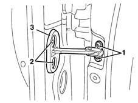
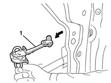
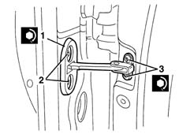

7005A28 front side door limiter- repair or replace
- Path
- Procedures > 70 FITTINGS > 7005 PASSENGER COMPARTMENT FRONT SIDE DOORS > 7005A front side door assembly > 7005A28 front side door limiter- repair or replace
- Kind
- repair procedure (removal / refitting; the operation number is the code)
- Applies to
- all engines; all production periods
- Interactive page
- https://sloeber94.github.io/elrnDB-lYpsln/en/#/2429480
Applies to: all engines; all production periods
 Removing
Removing
 Refitting
Refitting7005C44 interior handle panel - r r
7005M11 Driver's front door electric window control SWITCH - R.R.
7005M12 passenger side front door electrically operated window switch - r r
7005E12 corner cover of one front side door, lh or rh r r
7005E08 front side door interior panel r r
7005D14 front side door descending window glass - r r with door panel (and mount frame) removed
7005A08 interior support frame of one side door r r with door panel removed
1. Undo the bolts on the bodyshell.
2. Undo the bolts on the door.
3. Remove the gasket.

Applies to: all engines; all production periods
1. Remove the check strap extracting it from the door frame.

Applies to: all engines; all production periods
Refitting
RemovingCheck that the check strap and the seal are not damaged.
1. Fit the check strap in its housing with the seal.
2. Tighten the bolts securing the check strap to the door.
 | Fastening | Component | Ø | Value (daNm) |
|---|---|---|---|---|
2 | Bolt | FRONT DOOR OPENING LIMITER | M6 | 1.2 |
3. Tighten the bolts fixing the check strap to the bodyshell.
| Fastening | Component | Ø | Value (daNm) |
|---|---|---|---|---|
3 | Bolt | FRONT DOOR OPENING LIMITER | M6 | 1.5 |

Applies to: all engines; all production periods
7005A08 interior support frame of one side door r r with door panel removed
7005D14 front side door descending window glass - r r with door panel (and mount frame) removed
7005E08 front side door interior panel r r
7005E12 corner cover of one front side door, lh or rh r r
7005M12 passenger side front door electrically operated window switch - r r
7005M11 Driver's front door electric window control SWITCH - R.R.
Topics linked from this page (7)
- 7005A08 interior support frame of one side door r r with door panel removed
- 7005C44 interior handle panel - r r
- 7005D14 front side door descending window glass - r r with door panel (and mount frame) removed
- 7005E08 front side door interior panel r r
- 7005E12 corner cover of one front side door, lh or rh r r
- 7005M11 Driver's front door electric window control SWITCH - R.R.
- 7005M12 passenger side front door electrically operated window switch - r r